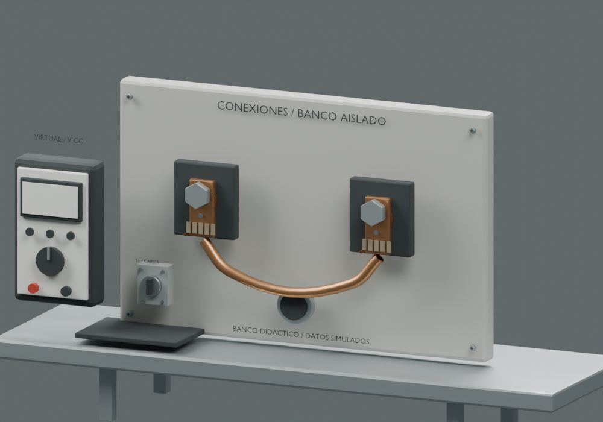
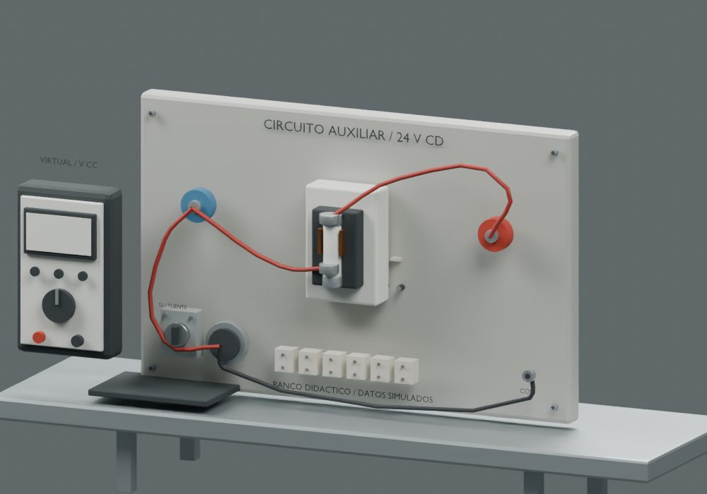
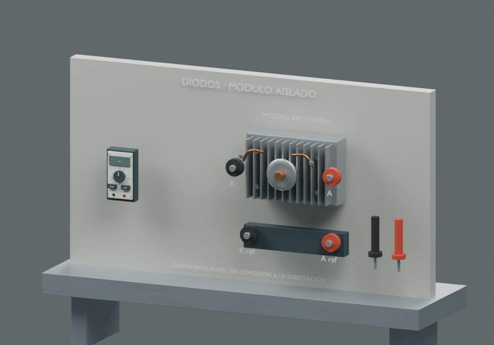
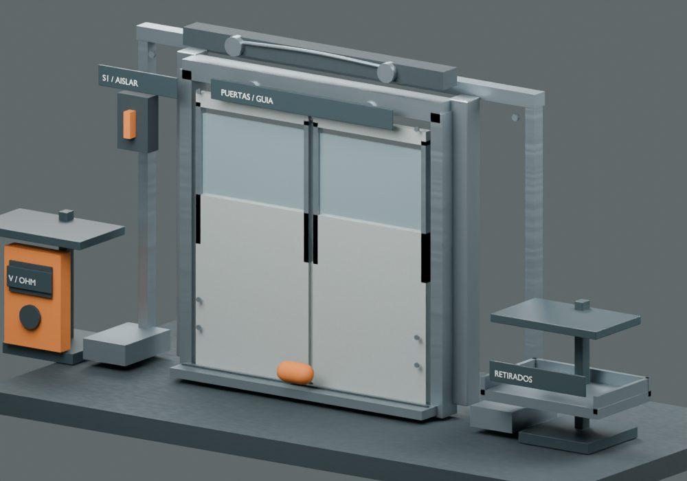
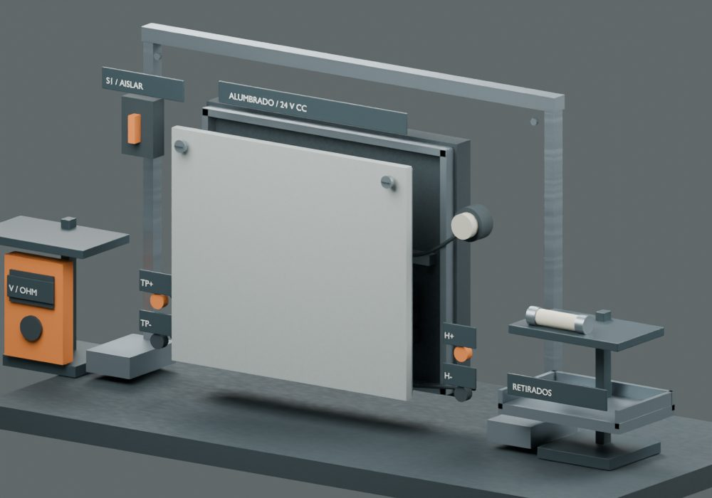
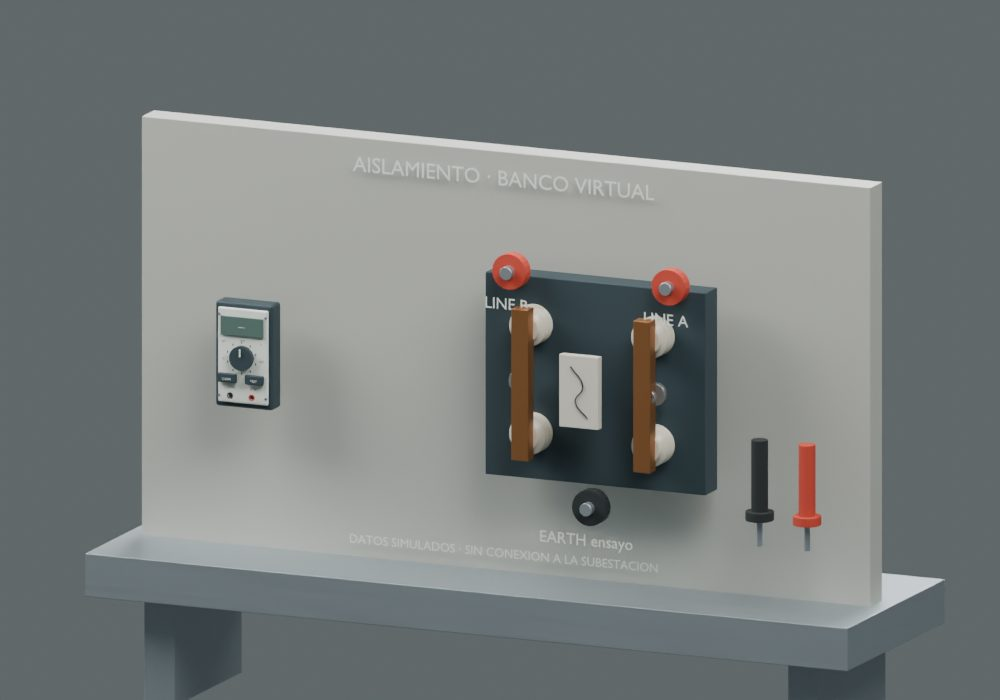
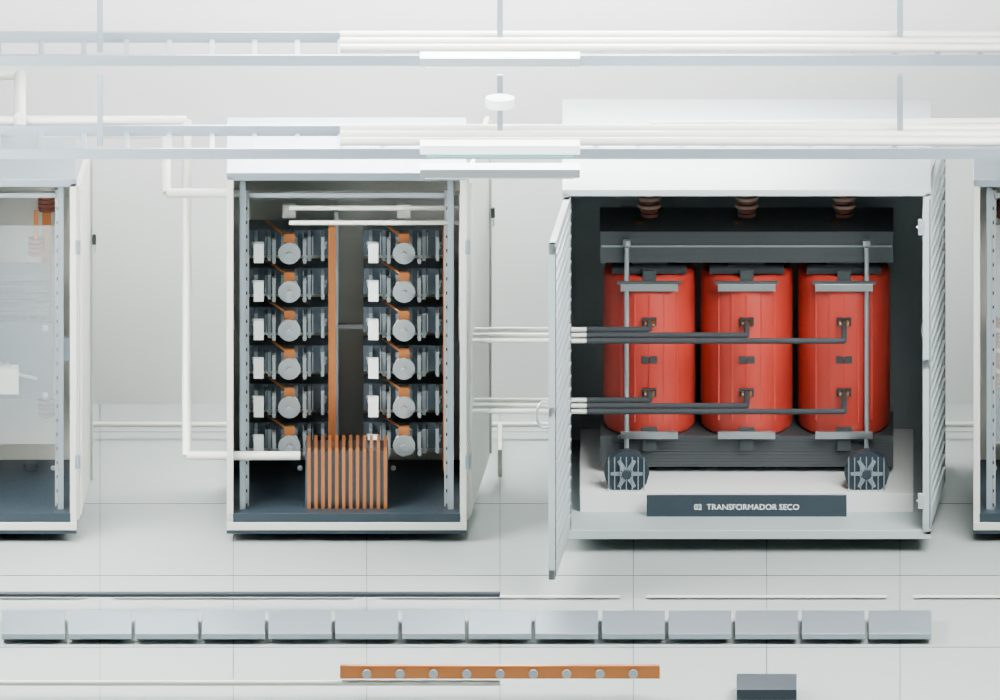
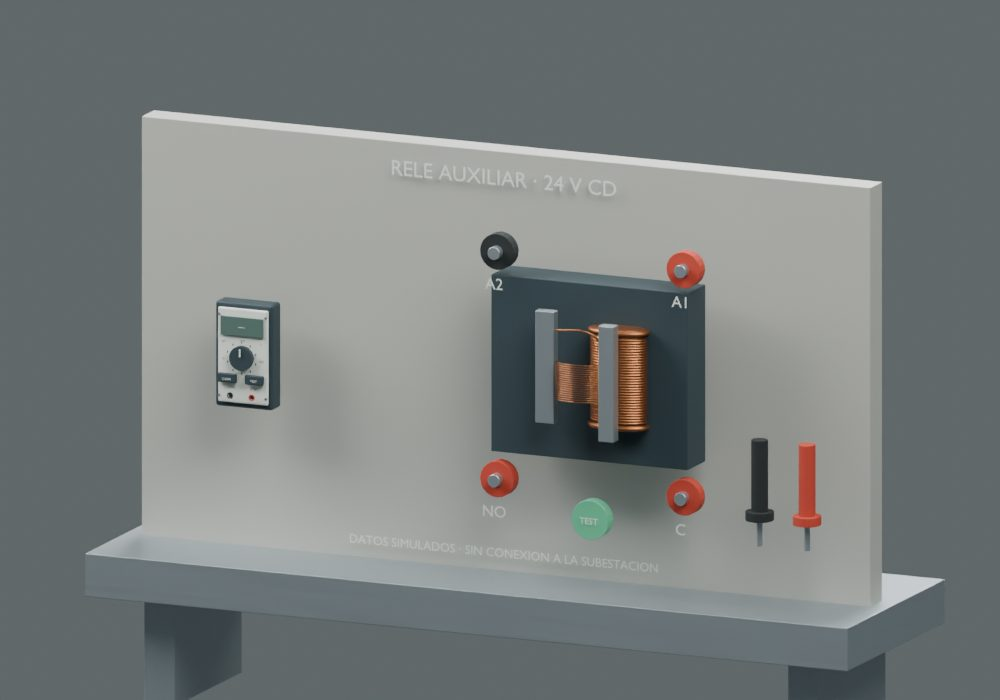
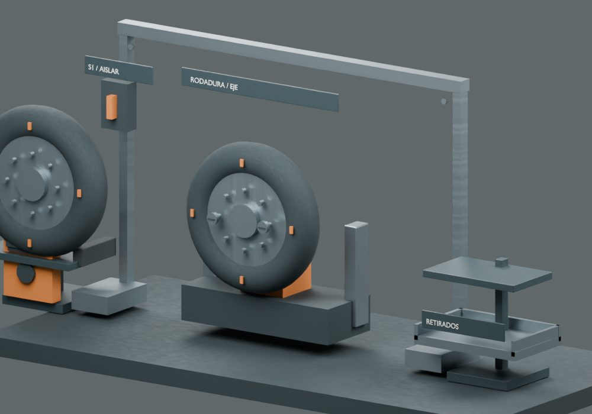
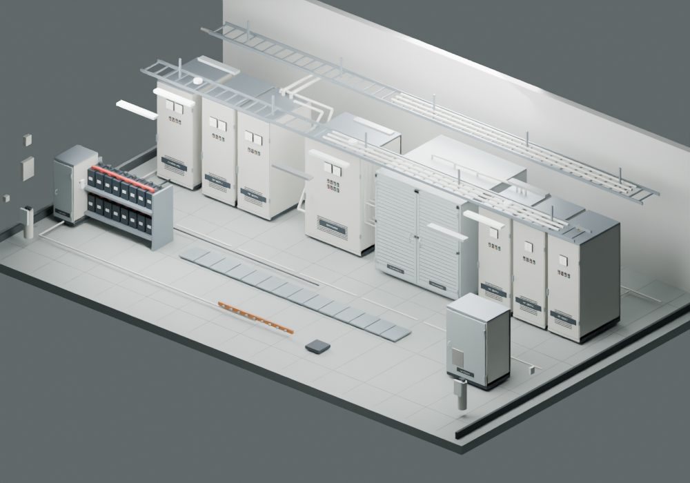
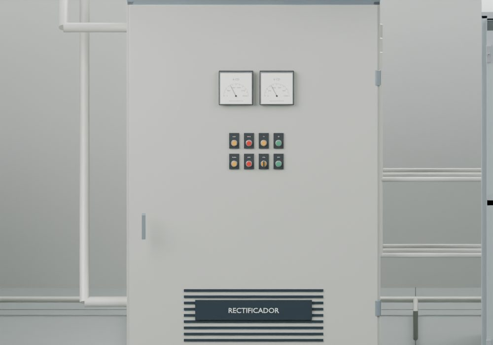
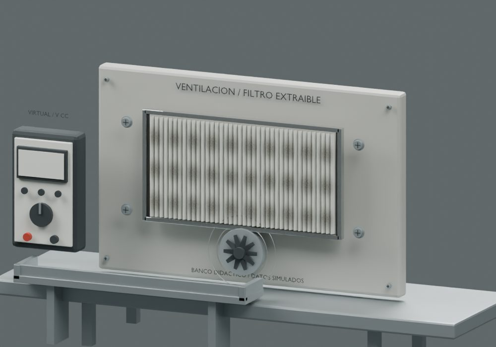
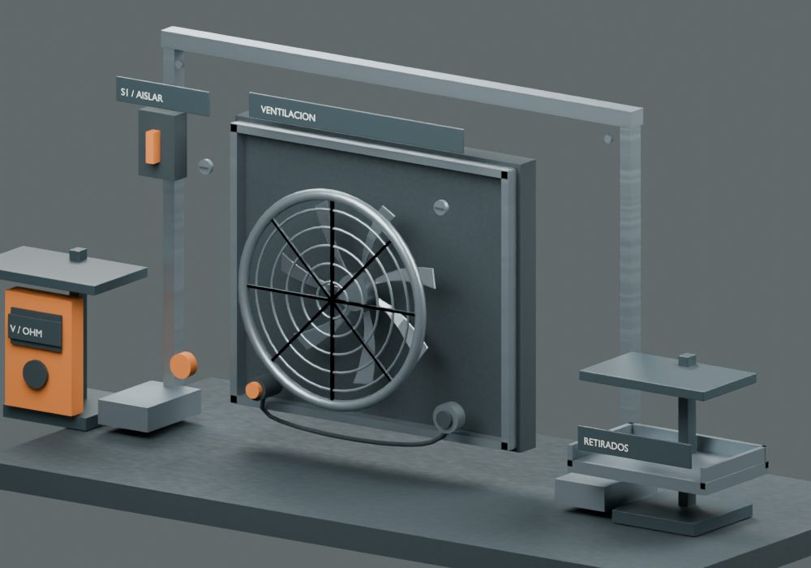
Revisión 148 · Trenes y subestación
Alcance, fuentes y verificaciones detalladas
Las imágenes son renders nativos; el navegador incorpora los instrumentos actualizados, lecturas, manos, cables y animaciones. No son capturas de WebGL.













Verificación funcional por DOM/CPU y 328 acciones de puntero. Pendiente revisión visual interactiva en navegador. Los bancos y las lecturas son didácticos, sin conexión a una instalación real.